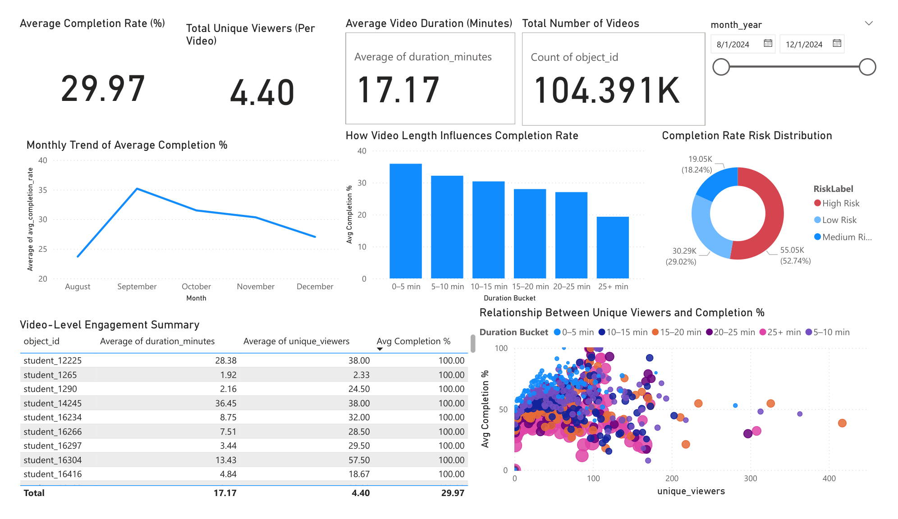
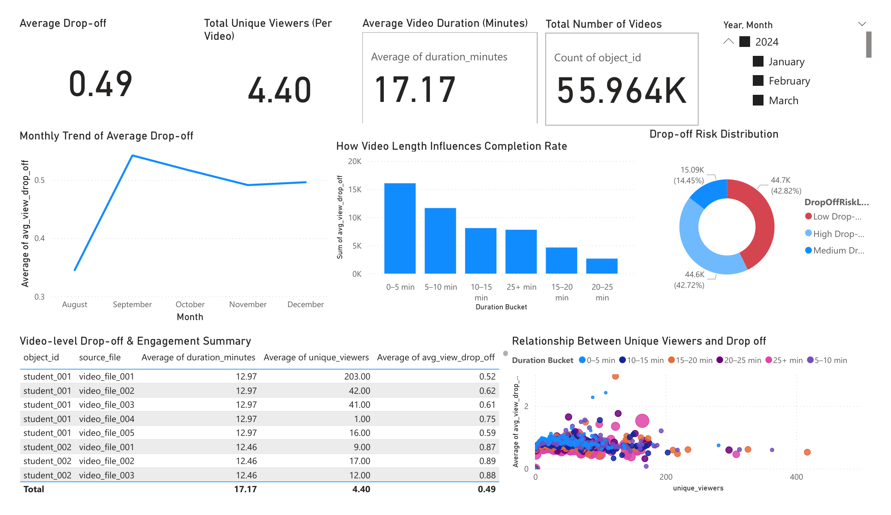

Greeshma Priya Pendyala
Data Analyst | SQL · Python · R · Spark · Snowflake · Databricks · BI
MS in Data Analytics Engineering · George Mason University
Data Analyst with 2 years delivering SQL/Python/R/Spark pipelines, Snowflake/Databricks workloads, and Tableau/Power BI dashboards on AWS. Cuts reporting turnaround by 50% and sustains 99.9% accuracy through validation, lineage, and governed metrics. Agile + Lean/Six Sigma mindset; strong on self-service analytics and clear, decision-ready KPIs.
About Me
Data analyst focused on building systems that are not just functional, but reliable and decision-ready.
Data Analyst with 2 years of experience building scalable data pipelines and business intelligence solutions using SQL, Python, R, Spark, Snowflake, Databricks, and AWS. I focus on translating multi-source data into governed, decision-ready outputs that reduce reporting turnaround and keep accuracy high.
Proven track record of cutting reporting turnaround time by 50% and sustaining 99.9% data accuracy through validation, lineage, metadata management, and quality controls. Skilled in Tableau and Power BI for delivering actionable insights to stakeholders.
Experienced in Agile with Lean and Six Sigma exposure; I prioritize self-service analytics, well-defined KPIs, and standardized documentation so teams can make faster, confident decisions.
Skills
Analyst toolkit with SQL, Databricks, SQL databases, visualization tools, and cloud-first workflows.
Programming & Processing
- SQL · Python · R · Spark · PySpark
- Pandas · NumPy · scikit-learn
- Git · JupyterLab · Bash
Data Platforms & Cloud
- Snowflake · Databricks (Delta Lake, Spark SQL, Notebooks)
- AWS (S3, Redshift, Athena, Glue) · Google BigQuery · Google Cloud Platform
- Microsoft SQL Server · PostgreSQL · MongoDB
Process & Methodologies
- Agile delivery · Lean · Six Sigma
- Self-service analytics enablement
- Documentation, audit readiness, stakeholder alignment
Data Engineering & Modeling
- Data Pipelines · ETL · Data Modeling
- Data Transformation · Data Validation
Business Intelligence & Analytics
- Power BI · Tableau · Excel
- KPI Design · Data Visualization
- Self-Service Reporting · Business Analysis
Data Management & Governance
- Metadata · Data Lineage · Data Quality
- Access Governance · Audit-Ready Documentation
Statistical & Analytical Methods
- Exploratory Analysis · Hypothesis Testing · A/B Testing
- Regression · Classification · Clustering · Time Series
Experience & Education
Reporting, analytics, and stakeholder-ready delivery across nonprofit, civic, academic, and insurance domains.
Professional Experience
CRM Data Intern, Bread for the World
Feb 2026 - PresentRemote
- • Developed Power BI, Tableau, and Excel dashboards and reporting solutions to track program performance, funding utilization, and operational metrics, improving KPI visibility and enabling data-driven decision-making.
- • Translated stakeholder requirements into reusable metrics and scalable self-service reporting frameworks, enabling efficient data access and reducing reliance on ad hoc analysis.
- • Implemented SQL and Python-based validation checks to improve data accuracy, strengthen metric consistency, and support data quality standards.
- • Standardized data definitions, documentation, and reporting logic across datasets, reinforcing data governance practices including metadata, lineage, and audit readiness.
Survey Data Insights & Analyst, Northern Virginia Families for Safe Streets
Feb 2026 - Present- • Analyzed multi-source crash, survey, and administrative datasets across 15+ regions using Python, SQL, and Snowflake to identify trends and support operational and strategic decisions.
- • Designed and deployed Power BI dashboards tracking 20+ KPIs, enabling real-time performance monitoring and faster stakeholder decision-making.
- • Performed statistical analysis to identify patterns and drive data-backed program strategy improvements.
- • Developed scalable data pipelines and transformation workflows, improving data consistency, reliability, and reporting efficiency across enterprise reporting systems.
Data Analyst & API Intern, George Mason University
Aug 2025 – Dec 2025- • Built data pipelines using Python and SQL to collect, transform, and manage multi-source engagement data, improving data reliability and accessibility.
- • Developed predictive models to analyze the impact of video length on completion and drop-off rates, achieving ~90% accuracy and enabling data-driven content optimization.
- • Designed and deployed Power BI and Tableau dashboards tracking key business metrics, improving performance visibility and reducing manual reporting effort by 30–40%.
- • Implemented data validation checks and standardized workflows, improving data quality, governance, and consistency across reporting systems.
Data Analyst, Reliance Nippon Life Insurance Co. Ltd., Hyderabad, India
Sep 2022 – Dec 2023- • Engineered scalable data solutions using SQL and Python to process large financial and operational datasets, reducing reporting turnaround time by 50%.
- • Built and optimized data ingestion pipelines using AWS (S3, Glue) and Databricks, reducing data latency from 24 hours to 90 minutes and enabling near real-time analytics.
- • Implemented ETL pipelines using PySpark and Delta Lake, improving batch processing efficiency and enabling incremental data processing.
- • Developed parameterized data models and validation frameworks, ensuring 99.9% data accuracy and strengthening data quality and governance.
- • Designed and deployed Power BI and Tableau dashboards to monitor claims, policy performance, and risk metrics, enabling faster data-driven decision-making.
Education
George Mason University
Jan. 2024 – Dec. 2025Master’s in Data Analytics Engineering · GPA: 3.90 / 4.0 · Fairfax, VA
Jawaharlal Nehru Technological University (JNTU)
Jul. 2019 – Jul. 2022Bachelor’s in Civil Engineering · GPA: 2.9 / 4.0 · Telangana, India
Featured Analytics Dashboards
Selected Power BI dashboards demonstrating KPI reporting, engagement analysis, and stakeholder-ready business intelligence workflows.

Average Completion Dashboard
Power BI5K+ Kaltura records showing how duration drives completion; dashboard tracks completion %, cohorts, and duration.

Drop-off Dashboard
Power BIDrop-off and retention trends across time and content segments.
Featured Projects
Focused on data cleaning, analytical workflows, reporting value, and decision support.

Kaltura Video Engagement Analysis & Completion Modeling
Unified Kaltura playback logs, engineered engagement features, and modeled completion to explain duration-driven drop-off. Exposed scores via Flask API and produced dashboard-ready outputs.

Real Estate Prices & Socioeconomic Factors – Connecticut
Used socioeconomic indicators to explain CT price variation; cleaned/merged data, engineered regional features, and visualized disparities to guide pricing decisions.

Bridge Condition Assessment & Deterioration Analysis
Processed bridge inspections, analyzed deterioration trends, and visualized high-risk components to inform maintenance priorities.

Resume Job Matching Using NLP & Similarity Scoring
Cleaned resumes and JDs, used TF-IDF similarity to line up the best fits, and surfaced easy-to-read scores so screening feels faster and fair.

SMS Spam Detection (SpamShield ML)
Cleaned SMS corpus, engineered text features, and trained a lightweight classifier with ranked outputs and monitoring views.
Let’s Connect
Get in touch
Open to Data Analyst, BI, Reporting, and Analytics roles. Based in Fairfax, VA with remote collaboration experience.